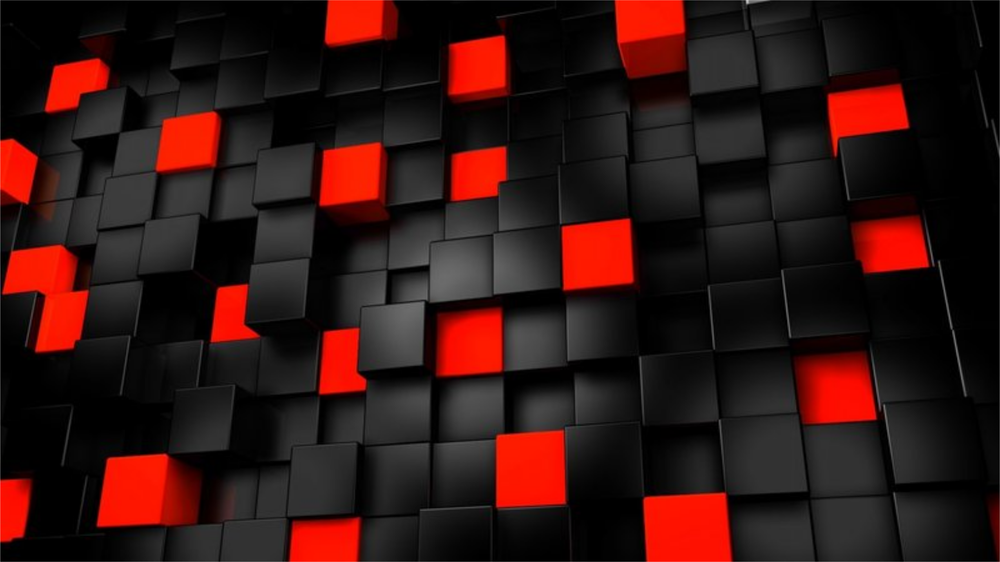

JavaScript (/ˈdʒɑːvɑːˌskrɪpt/; аббр. JS /ˈdʒeɪ.ɛs./) — мультипарадигменный язык программирования. Поддерживает объектно-ориентированный, императивный и функциональный стили. Является реализацией языка ECMAScript (стандарт ECMA-262).
JavaScript обычно используется как встраиваемый язык для программного доступа к объектам приложений. Наиболее широкое применение находит в браузерах как язык сценариев для придания интерактивности веб-страницам.
Основные архитектурные черты: динамическая типизация, слабая типизация, автоматическое управление памятью, прототипное программирование, функции как объекты первого класса.
На JavaScript оказали влияние многие языки, при разработке была цель сделать язык похожим на Java, но при этом лёгким для использования непрограммистами. Языком JavaScript не владеет какая-либо компания или организация, что отличает его от ряда языков программирования, используемых в веб-разработке.
Название «JavaScript» является зарегистрированным товарным знаком компании Oracle Corporation в США.